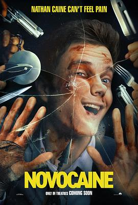

6.2
无痛凯恩
Novocaine
2025
美国
评分 6.2
导演:
罗伯特·奥尔森 / 丹·伯克（Robert Olsen / Dan Berk）
演员:
杰克·奎德 / 安珀·明迪桑德 / 雅各布·贝塔隆 / 马特·沃尔什 / 雷·尼科尔森 / 贝蒂·加布里埃尔
类型:
动作,喜剧,惊悚
剧情简介
内森·凯恩（杰克·奎德 饰）表面看似平凡：他是银行助理经理，工作谨慎生活规整。却有一个鲜为人知的身体状况——他天生无法感受疼痛。这意味着拔弹、被拳打脚踢、甚至把手伸进沸水都不会让他皱眉。平静生活在他女友雪莉（安珀·明迪桑德 饰）离世的那一刻彻底崩塌。雪莉的意外死亡像一条毒蛇潜入他的世界，愤怒与空虚催化成复仇的火焰。凯恩决定化身为“痛觉缺席”的战士：当雪莉被绑架后，他毫不畏惧地冲进劫案现场、偷警车、追击歹徒，从银行金库、餐厅厨房、荒废工厂一路迈进，刀刃与血痕在他身上留下却从不在他心里留下惊恐。影片用痛觉的缺失作为视觉与情感双重基调：当他在冷光灯下拔出子弹，在金属弹片切割中微笑，你意识到他不只是强者，更是被剥夺“痛觉”这一人类警告机制的人。与此同时，他的拳拳到肉并不是没有代价——肌肉破裂、皮肤裂开、骨骼冲击，全被镜头不避讳。雪莉的记忆在他脑中回响：“你会疼吗？”他无声回答：不会。但他的心，却早已疼得无法承受。片中最吸引人的亮点在于：当主角不能痛，是否意味着无所畏惧？还是意味着他更容易被伤？镜头在他逃生、追捕、破碎玻璃中穿梭，也在他低头抽搐、呼气短促时停顿。笑点、血点、泪点交织：他用“无法疼”的身体撕裂常人的恐惧，也用被剥夺的缺陷寻找自己的救赎。如果你喜欢那种同时具备肆意暴力、黑色幽默与心理裂隙的动作片，《无痛凯恩》将带你进入一个外表冷酷、内心却被疼痛束缚的复仇者世界。